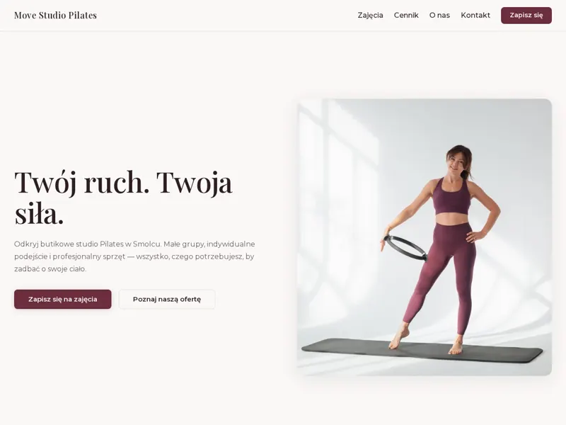

Warsztat online · edycja 1 · 26–30.10.2026
Od localhosta
do produkcji
Masz stronę zbudowaną z agentem AI, która działa tylko na Twoim komputerze? Pierwsze wdrożenie z konfiguracją serwera zajmuje kilka godzin, każde kolejne w Coolify to kilka minut. W 5 dni zrozumiesz cały proces i nauczysz się go powtarzać: wdrożenie, zmiany, kopie, odtworzenie.
- 3 spotkania na żywo + nagrania
- max 15 osób, odpowiadam osobiście na Discordzie

- Termin
- pn 26.10 – pt 30.10
- Na żywo
- pn, śr, pt 19:00–20:15
- Grupa
- max 15 osób
- Zapisy do
- 19.10, 20:00
Rezultat
Co pokażesz w piątek wieczorem
domena + HTTPS + wdrożona zmiana + odtworzona kopia + plan utrzymania
- Strona na własnej domenie z HTTPSna własnym VPS, wdrożona przez Coolify
- Wdrożona zmianai wiedza, gdzie szukać logów, gdy coś nie wstaje
- Kopia bazy i plików poza serweremoraz przeprowadzona próba jej odtworzenia
- Plan utrzymania na pierwszy miesiącadres, wersja, składniki, miejsce kopii, sposób odtworzenia, koszty
Program
Pięć dni, trzy spotkania
Spotkania prowadzę na żywo, nagrania trafiają do panelu kursu. W dni bez spotkań robisz zadanie z instrukcją (ok. 1–2 godz.) i piszesz na kanale edycji, gdy utkniesz.
-
na żywo Poniedziałek 26.10 · 19:00–20:15
01Co właściwie wdrażamy
Aplikacja, baza danych i przesłane pliki: co z czego się składa i gdzie będzie mieszkać. Przegląd projektu, zmienne środowiskowe bez sekretów w repo, plan serwera.
→ lista składników i porządny .env.example
-
zadanie Wtorek 27.10
02Serwer, dostęp i domena
Własny VPS, logowanie przez SSH, podstawy uprawnień, rekordy DNS dla domeny.
→ działający dostęp do serwera i domena wskazująca na niego
-
na żywo Środa 28.10 · 19:00–20:15
03Wdrożenie przez Coolify
Pierwsze wdrożenie, domena z HTTPS, dostęp do panelu CMS. Czytamy logi i rozbieramy typowy błąd przy starcie.
→ strona pod Twoim adresem, przejęta checklista kontroli
-
zadanie Czwartek 29.10
04Zmiana, aktualizacja, kopia
Zmiana w repo i jej wdrożenie, aktualizacja zależności z przeglądem różnic, kopia bazy i plików poza serwerem.
→ wdrożona zmiana i kopia z opisaną zawartością
-
na żywo Piątek 30.10 · 19:00–20:15
05Odtworzenie i plan utrzymania
Odtworzenie kopii w osobnym środowisku, cofanie wydania a migracje bazy, co sprawdzać przez najbliższy miesiąc.
→ odtworzona kopia i plan utrzymania na pierwszy miesiąc
Tak wygląda efekt
Strona, panel i własny serwer
Na tym samym stacku ćwiczymy na warsztacie: Next.js, Payload CMS i Postgres, na VPS przez Coolify. Film (49 s): strona, panel, edycja treści i publikacja.
Pokazuje stack i sposób publikacji, na których pracujemy.
Prowadzący
Bartek Filipiuk
W IT pracuję zawodowo od 2008 roku, przez większość tej drogi w Drupalu i PHP. Z AI programuję od 2023: najpierw kopiowanie kodu z czatu, potem Cursor i Windsurf, dziś agenci jak Claude Code i Codex. Na własnym VPS przez Coolify utrzymuję devince.dev, tę stronę i strony budowane z agentem, jak ta z filmu. Na warsztacie pokazuję proces, którego używam na co dzień, razem z błędami, które po drodze się zdarzają. Od lat uczę też na YouTube.
- w IT
- od 2008
- z AI w kodzie
- od 2023
Dopasowanie
Czy to dla Ciebie
Tak, jeśli:
- masz stronę albo projekt, który działa lokalnie, i zatrzymujesz się przed publikacją
- pracujesz z Claude Code, Codexem albo podobnym agentem
- chcesz sam publikować i utrzymywać proste strony, swoje albo klientów
- nie boisz się terminala: wklejasz polecenia i chcesz rozumieć, co robią
Nie masz jeszcze projektu? Pracujesz na projekcie referencyjnym, który dostajesz w cenie.
Tu tego nie robimy:
- budowania strony od briefu (to robi starter)
- migracji z Lovable, Replit i podobnych
- SaaS z płatnościami i kontami klientów
- Kubernetesa i pełnej administracji Linuxem
- audytu bezpieczeństwa i pentestów
Czego potrzebujesz
- komputera z Dockerem, Node 20.19+ i pnpm (sprawdza je skrypt z paczki)
- konta GitHub
- własnego VPS i domeny; pomogę wybrać przed startem
- około 1–2 godzin w dni bez spotkań
Koszty poza warsztatem
| VPS | ok. 20–40 zł/mies. |
|---|---|
| Domena | ok. 15–60 zł/rok |
| Miejsce na kopie | kilka zł/mies. |
| Agent AI (opcjonalnie) | ok. 100 zł/mies. |
Płacisz bezpośrednio dostawcom. Kwoty orientacyjne, wrzesień 2026.
Edycja 1 · 26–30.10.2026
Zapis na warsztat
W cenie
- 3 spotkania na żywo (pn, śr, pt 19:00–20:15) w terminie edycji, nagrania zostają w panelu
- instrukcje i checklisty na dni bez spotkań
- paczka startera i projekt referencyjny
- kanał edycji na Discordzie: pytania zadajesz, kiedy chcesz; odpowiadam przez 30 dni od uzyskania dostępu
Materiały i nagrania przerabiasz we własnym tempie, dostęp masz przez 12 miesięcy od zakupu.
Bez ryzyka: rezygnacja do 19.10, 20:00 albo odstąpienie w 14 dni od zakupu, także po starcie.
Nie mam jeszcze żadnej strony. Czy to ma sens?
Tak, jeśli chcesz nauczyć się publikacji i utrzymania. Pracujesz wtedy na projekcie referencyjnym (strona z CMS na starterze), który dostajesz w cenie. Jeśli najpierw chcesz zbudować stronę od briefu z agentem, zacznij od startera za 49 zł; jeśli potem kupisz warsztat, zwrócę Ci te 49 zł po zamknięciu zapisów 19.10.
Czy mogę wdrożyć swój własny projekt?
Tak, jeśli pasuje do ścieżki: buduje się lokalnie, masz jego źródła i zrozumiałe zależności, najlepiej Next.js z bazą Postgres. Napisz przed zakupem na bartek@devince.dev, jaki to stack. Jeśli po drodze coś nie zagra, kończysz ćwiczenie na projekcie referencyjnym, a grupa nie czeka.
Mam już starter za 49 zł.
Po zakupie warsztatu napisz na bartek@devince.dev; zwrócę 49 zł po zamknięciu zapisów 19.10.
Mogę się wycofać?
Tak. Do zamknięcia zapisów, czyli do 19.10.2026 do 20:00, możesz zrezygnować bez podania przyczyny, a niezależnie od tego przez 14 dni od zakupu przysługuje Ci prawo odstąpienia, także gdy warsztat już się zaczął. W obu przypadkach zwracam całą kwotę. Wystarczy mail albo formularz odstąpienia.
Nie zdążę na spotkanie na żywo.
Nagranie każdego spotkania trafia do panelu kursu po spotkaniu. Pytania możesz zostawić na kanale edycji przed spotkaniem albo po nim.
Co jest nagrywane na spotkaniach?
Nagrywam tylko mój ekran i mój głos. Jeśli zadasz pytanie na głos, Twój głos może trafić na nagranie; kamer nie nagrywam. Nagrania są dostępne tylko dla uczestników edycji. Szczegóły: Regulamin.
Czy po warsztacie strona będzie w pełni bezpieczna?
Będzie mieć HTTPS, zamknięty panel, kopie i sposób ich odtworzenia, i będziesz wiedzieć, co sprawdzać. To nie jest audyt bezpieczeństwa ani gwarancja dla dowolnego zastosowania; ćwiczymy na prostych stronach bez danych klientów.
Jak długo mam dostęp do materiałów i pomocy?
Instrukcje i nagrania są w panelu kursu przez 12 miesięcy od zakupu i przerabiasz je we własnym tempie. Spotkania na żywo odbywają się tylko w terminie edycji (26–30.10.2026), ich nagrania zostają w panelu. Pytania do lekcji możesz zadawać na Discordzie, kiedy chcesz. Odpowiadam przez 30 dni od uzyskania dostępu, w dni robocze, zwykle raz dziennie; potem kanał dalej działa, ale odpowiedzi nie są gwarantowane.
Dostanę fakturę?
Tak. Podaj dane przy płatności albo napisz po zakupie.
Strona, która działa tylko u Ciebie, jeszcze nie jest stroną
W piątek 30.10 masz ją pod własnym adresem, z kopią, którą umiesz odtworzyć.
Dołączam do warsztatu — 249 złzapisy do 19.10, 20:00 · max 15 osób